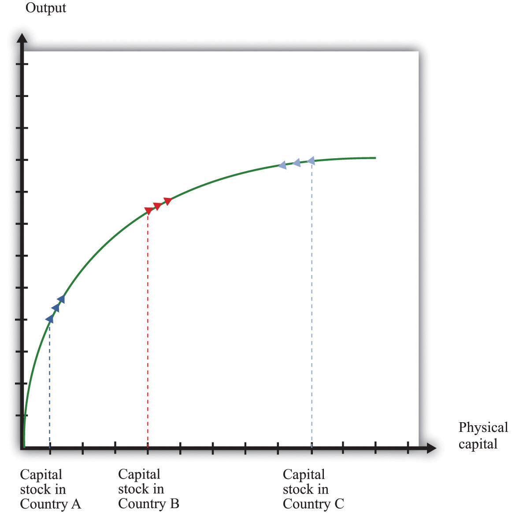
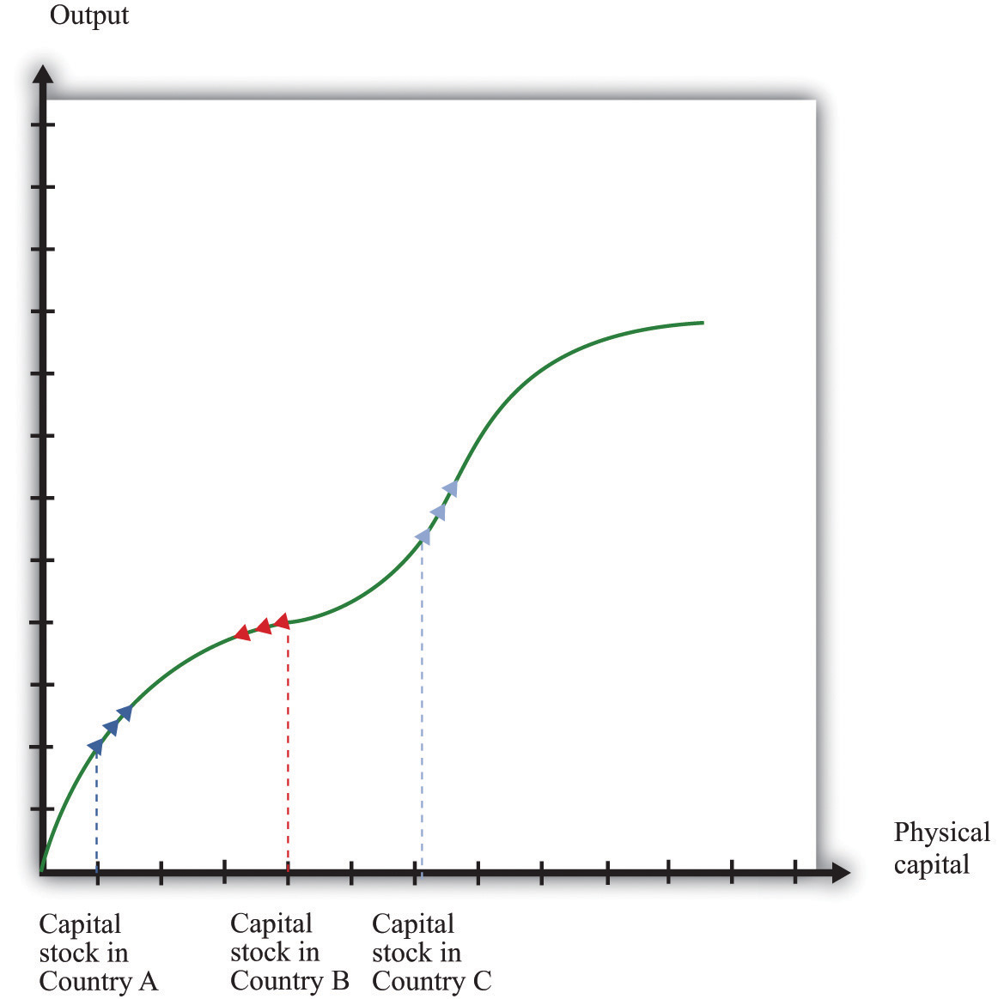
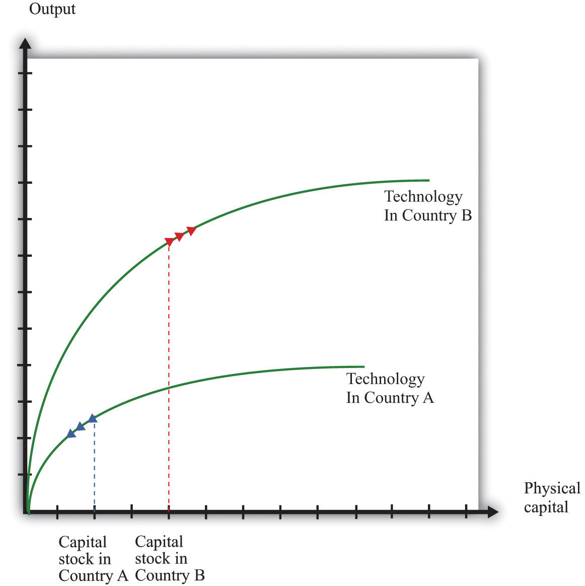

After you have read this section, you should be able to answer the following questions:
Our first task in this chapter was to explain the vast differences in living standards that we observe in the world. We now know that this variation is due to differences in physical capital, human capital, and technology. The rough calculations in Section 21.2 "Four Reasons Why GDP Varies across Countries" tell us that variations in physical capital, human capital, and technology all play a role in explaining differences in economic performance.
Now we consider these inputs separately. In this section, we look at the accumulation of physical capital. In Section 21.4 "Balanced Growth", we look at the role of human capital and technology. Our main aim is to consider one of our two remaining questions:
Will poorer countries catch up to richer countries?
Capital goods are goods such as factories, machines, and trucks. They are used for the production of other goods and are not completely used up in the production process. Economies build up their capital stocks by devoting some of their gross domestic product (GDP) to new capital goods—that is, investment. As we saw in our discussion of Solovenia in Section 21.2 "Four Reasons Why GDP Varies across Countries", if a country does not interact much with other countries (that is, it is a closed economy) the amount of investment reflects savings within a country. In open economies, the amount of investment reflects the perceived benefits to investment in that country compared to other countries.
Capital goods wear out over time and have to be scrapped and replaced. A simple way to think about this depreciation is to imagine that a fraction of the capital stock wears out every year. A reasonable average depreciation rateThe fraction of the capital stock that wears out each year. for the US economy is 4 or 5 percent. To understand what this means, think about an economy where the capital stock consists of a large number of identical machines. A depreciation rate of 5 percent means that for every 100 machines in the economy, 5 machines must be replaced every year.The depreciation rate can be understood in terms of the average lifetime of a typical machine. For example, a depreciation rate of 5 percent is the same as saying that, on average, machines last for 20 years. To see this, imagine that capital stock is kept constant at 100 machines, and each machine lasts for 20 years. Imagine also that 5 machines are 1 year old, 5 machines are 2 years old, and so forth, with the oldest 5 machines being 20 years old. Each year, these 5 oldest machines would wear out (5 percent depreciation) and have to be replaced by 5 new machines. After a year has passed, the situation will be exactly the same as the previous year: there will be 5 machines that are 1 year old, 5 machines that are 2 years, and so forth. Mathematically, we are saying that the lifetime of a machine = 1/depreciation rate: 20 = 1/0.05.
The depreciation of capital goods reduces the capital stock. The total amount of capital lost to depreciation each year is calculated by multiplying the depreciation rate and the capital stock together. If the capital stock is $30 trillion, for example, and the depreciation rate is 5 percent, then $1.5 trillion (= $30 trillion × 0.05) worth of capital is lost each year.
The capital stock increases as long as there is enough new investment to replace the worn out capital and still contribute some extra. The overall change in the capital stock is equal to new investment minus depreciation:
change in capital stock = new investment − depreciation rate × capital stock.For example, suppose that the current capital stock (measured in trillions of dollars) is 40, and the depreciation rate is 10 percent per year. Then the capital stock after depreciation is 40 − (.1 × 40) = 40 − 4 = 36. Suppose that new investment is $4.8 trillion. Then the new capital stock is 36 + 4.8 = 40.8. In this case, capital stock has increased by $0.8 trillion, or 2 percent.
The equation for the change in the capital stock is one of the fundamental ingredients of economic growth. It tells us that economies build up their capital stock—and therefore their real GDP—by devoting enough output to new investment to both replace worn out capital and then add some more. If we divide both sides of the previous equation by the capital stock, we can obtain the growth rateThe change in a variable over time divided by its value in the beginning period. of the capital stock. (Remember that the growth rate of a variable is the change in the variable divided by its initial level.)
The growth rate of the capital stock depends on three things:
It is intuitive that a higher investment rate increases the growth rate of the capital stock, and a higher depreciation rate decreases the growth rate of the capital stock. It is less obvious why the growth rate of the capital stock is lower when the capital stock is higher. The growth rate measures the change in the capital stock as a percentage of the existing capital stock. A given change in the capital stock results in a smaller growth rate if the existing capital stock is larger. For example, suppose that the current capital stock is 100, and the change in the capital stock is 10. Then the growth rate is 10 percent. But if the current capital stock is 1,000, then the same change of 10 in the capital stock represents only a 1 percent growth rate.
Toolkit: Section 31.21 "Growth Rates"
The toolkit contains more information on how growth rates are calculated.
Why are we so interested in the accumulation of capital? One reason is that poverty of the kind we observe in Niger and elsewhere is a massive problem for the world. About 40 percent of the world’s population—close to 2.5 billion people—live in conditions of poverty. (The World Bank defines poverty as living on less than US$2 per day.) We are not going to solve the problem of mass poverty overnight, so we would like to know whether this gap between the rich and the poor is a permanent feature of the world. It might be that economies will diverge, meaning that the disparities in living standards will get worse and worse, or it might be that they will converge, with poorer countries catching up to richer countries.
When comparing two countries, if we find that the poorer economy is growing faster than the richer one, then the two are converging. If we find that the richer country is growing faster than the poorer one, they are diverging. Moreover, if a country has a small capital stock, we know that—other things being equal—it will tend to be a poorer country. If a country has a large capital stock, then—again, other things being equal—it is likely to be a richer country. The question of convergence then becomes: other things being equal, do we expect a country with a small capital stock to grow faster than an economy with a large capital stock?
The answer is yes, and the reason is the marginal product of capital. From the production function, the marginal product of capital is large when the capital stock is small. Think again about Juan in Solovenia. A large marginal product of capital means that he can obtain a lot of extra output if he acquires some extra capital. This gives him an incentive to save rather than consume. A large marginal product of capital also means that Juan can attract investment from other countries.
A country where the marginal product of capital is high is a competitive economy—one where both domestic savers and foreign savers want to build up the capital stock. The capital stock will grow quickly in such an economy. This is precisely what we saw in the equation for the growth rate of the capital stock: higher investment and a lower capital stock both lead to a larger capital stock growth rate. Both of these imply that a country with a large marginal product of capital will tend to grow fast.
We illustrate this idea in Figure 21.8 "Convergence through the Accumulation of Capital". Country A has a small capital stock. The aggregate production function tells us that this translates into a large marginal product of capital—the production function is steep. In turn, a large marginal product of capital means that country A will grow quickly. Country B has an identical production function but a larger capital stock, so the marginal product of capital is lower in country B than in country A. There is less incentive to invest, implying that country B, while richer than country A, grows more slowly.
Figure 21.8 "Convergence through the Accumulation of Capital" also shows that it is possible for a country to have such a large capital stock that it shrinks rather than grows. Country C has so much capital that its marginal product is very low. There is little incentive to build up the capital stock, so the capital stock depreciates faster than it is replaced by new investment. In such an economy, the capital stock and output would decrease over time.
Figure 21.8 Convergence through the Accumulation of Capital
The growth rate of the capital stock depends on the marginal product of capital. Country A has little capital, so the marginal product of capital is large, and the capital stock will grow rapidly. Country B has more capital, so the capital stock grows more slowly. Country C has so much capital that the capital stock decreases.
Figure 21.8 "Convergence through the Accumulation of Capital" suggests an even stronger conclusion: all three economies will ultimately end up at the same capital stock and the same level of output—complete convergence. This conclusion is half right. If the three economies were identical except for their capital stocks and if there were no growth in human capital and technology, they would indeed converge to exactly the same level of capital stock and output. In Section 21.4 "Balanced Growth", we look at this argument more carefully. First, though, we examine the evidence on convergence.
Convergence is a very pretty theory but is it borne out by the evidence? Figure 21.9 "Some Evidence of Convergence" shows the growth experience of several countries in the second half of the 20th century. These countries are all members of the Organisation for Economic Co-operation and Development (OECD) and are, relatively speaking, rich.The countries are Australia, Austria, Belgium, Canada, Denmark, Finland, France, Iceland, Ireland, Italy, the Netherlands, Norway, Portugal, Spain, Switzerland, and the United States. The median real GDP per capita in 1950 for these countries was about $6,000, in year 1996 dollars. Data for Figure 21.9 "Some Evidence of Convergence" and Figure 21.10 "Some Evidence of Divergence" come from Alan Heston, Robert Summers, and Bettina Aten, “Penn World Table Version 6.2,” Center for International Comparisons of Production, Income and Prices at the University of Pennsylvania, September 2006, accessed June 29, 2011, http://pwt.econ.upenn.edu/php_site/pwt_index.php. Figure 21.9 "Some Evidence of Convergence" shows real GDP per person in these countries relative to the United States (the United States itself is the horizontal line near the top of the figure.) Figure 21.9 "Some Evidence of Convergence" does show some evidence of convergence. Countries with higher levels of real GDP person in 1950 tended to grow more slowly than countries with lower levels of real GDP per person. Poorer countries in this group tended to catch up with richer countries.
Figure 21.9 Some Evidence of Convergence

The growth experience of 16 relatively developed countries, measured as real GDP per person relative to the level in the United States, shows considerable evidence of convergence.
So far so good. But Figure 21.10 "Some Evidence of Divergence" shows the growth experience over the same period for a more diverse group of countries. This group is largely composed of poorer countries. The picture here is very different: we do not see convergence. There is no evidence that the poorer countries are growing faster than the richer countries. In some cases, there even appears to be divergence: poor countries growing more slowly than rich countries so that output levels in rich and poor countries move further apart.
Figure 21.10 Some Evidence of Divergence

In contrast to Figure 21.9 "Some Evidence of Convergence", the countries in this sample do not appear to be converging. Many countries that were poor in 1950 were just as poor, relatively speaking, in 2000.
Table 21.5 "Evidence from Select Countries" shows more data for some of these countries. It lists the level of initial GDP per person and the average growth rate in GDP per person between the early 1950s and the end of the century. For example, Argentina had real GDP per person of $6,430 in 1950 (in year 1996 dollars) and grew at an average rate of 1.25 percent over the 50-year period. Egypt and South Korea had very close levels of GDP per person in the early 1950s, but growth in South Korea was much higher than that in Egypt: by the year 2000, GDP per person was $15,876 in South Korea but only $4,184 in Egypt. These two countries very clearly diverged rather than converged. Looking at China, the level of GDP per person in the early 1950s was less than 10 percent that of Argentina. By 2000, GDP per person in China was about 33 percent of that in Argentina.
Table 21.5 Evidence from Select Countries
| Country (Starting Year) | Real GDP per Capita (Year 1996 US Dollars) | Percentage Average Growth Rate to 2000 |
|---|---|---|
| Argentina (1950) | 6,430 | 1.25 |
| Egypt (1950) | 1,371 | 2.33 |
| China (1952) | 584 | 4.0 |
| South Korea (1953) | 1,328 | 5.5 |
Source: Penn World Tables
Overall, this evidence suggests that our theory can explain the behavior over time of some but not all countries. If we look at relatively rich countries, then we do see evidence of convergence. Across broader groups of countries, we do not see convergence, and we see some evidence of divergence.
Why is it that, contrary to what Figure 21.8 "Convergence through the Accumulation of Capital" seems to suggest, not all countries converge? The logic of that picture rests on the diminishing marginal product of capital. If rich countries have lower marginal product of capital than poor countries, then we expect poor countries to catch up. If, for some reason, richer countries sometimes also have a higher marginal product of capital than poorer countries, then the argument for convergence disappears.
Figure 21.11 "Divergence Arising from Increasing Marginal Product of Capital" shows an example where the aggregate production function looks a bit different. This production function has a range where increases in capital stock lead to a higher rather than a lower marginal product of capital. That is, for some amounts of capital, we see increasing marginal product of capital rather than diminishing marginal product of capital. In the figure, country A and country B converge, just as in our previous diagram. But country C is rich enough to lie on the other side of the range where there is an increasing marginal product of capital. Country C therefore has a higher marginal product of capital than country B, even though country C is richer. Countries B and C will diverge, rather than converge.
Figure 21.11 Divergence Arising from Increasing Marginal Product of Capital
In this diagram, three countries have an aggregate production function that does not always exhibit diminishing marginal product of capital. As a result, the economies need not converge.
Figure 21.12 "Divergence Arising from Differences in Technology" shows another reason why a richer country might have a higher marginal product of capital than a smaller country. In Figure 21.8 "Convergence through the Accumulation of Capital" we supposed that the three countries had the same production function and differed only in terms of their capital stock. In Figure 21.12 "Divergence Arising from Differences in Technology", country B is richer than country A for two reasons: it has more capital and has a superior technology (or more labor or human capital). The higher capital stock, other things being equal, means a lower marginal product of capital in country B. But the superior technology, other things being equal, means a higher marginal product of capital in country B. In the picture we have drawn, the technology effect dominates. Country B has the higher marginal product of capital, so it is the more attractive location for capital—it is more competitive. Because of this, the capital stock increases in country B. Indeed, if the only factor driving investment is the marginal product of capital, then we would expect capital to flow among countries until the marginal product of capital is equal everywhere.We discuss capital migration across countries in more detail in Chapter 20 "Globalization and Competitiveness".
One reason why a richer economy might have better technology is because it has better social infrastructure. In particular, developed economies often have the legal and cultural institutions that preserve property rightsAn individual’s (or institution’s) legal right to make all decisions regarding the use of a particular resource.. The return on investment is higher, other things being equal, when property rights are protected. In economies with less well-developed institutions, investors need a higher rate of return to compensate them for the additional risk of placing their capital in those countries.
Measuring these aspects of social infrastructure is a challenge. The World Bank has attempted to do so in its 2005 World Development Report.World Bank, World Development Report 2005: A Better Investment Climate for Everyone (New York: World Bank and Oxford University Press, 2004), 8, accessed August 22, 2011, http://siteresources.worldbank.org/INTWDR2005/Resources/complete_report.pdf. The study looks at various aspects of doing business in 48 countries. The top constraints on investment reported by firms were policy uncertainty, macroeconomic instability, and taxes. Many of the risks of doing business are directly associated with government action in the present and in the future. This is nicely stated in the World Bank report: “Because investment decisions are forward looking, firms’ judgments about the future are critical. Many risks for firms, including uncertain responses by customers and competitors, are a normal part of investment, and firms should bear them. But governments have an important role to play in maintaining a stable and secure environment, including by protecting property rights. Policy uncertainty, macroeconomic instability, and arbitrary regulation can also cloud opportunities and chill incentives to invest. Indeed, policy-related risks are the main concern of firms in developing countries.”World Bank, World Development Report 2005: A Better Investment Climate for Everyone (New York: World Bank and Oxford University Press, 2004), 5, accessed August 22, 2011, http://siteresources.worldbank.org/INTWDR2005/Resources/complete_report.pdf.
Figure 21.12 Divergence Arising from Differences in Technology
In this diagram, country B has a better technology or more human capital than country A. Even though country B has a larger capital stock, it also has a larger marginal product of capital.
Suppose we have 100 units of capital stock at the beginning of 2012 and the following table gives the investment for the next 5 years. Suppose the depreciation rate is 5 percent. Fill in the blanks in the table for the years 2012–2017.
| Year | Capital Stock (Start of Year) | Investment | Depreciation |
|---|---|---|---|
| 2012 | 100 | 80 | |
| 2013 | 20 | ||
| 2014 | 50 | ||
| 2015 | 120 | ||
| 2016 | 10 |